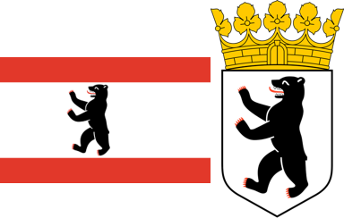

Image with Caption. Hover to see information.
East Berlin Wall
East Berlin was the capital city of the German Democratic
Republic from 1949 to 1990. Formally, it was the Soviet
sector of Berlin, established in 1945. The American,
British, and French sectors were known as West Berlin.
From 13 August 1961 until 9 November 1989, East Berlin was
separated from West Berlin by the Berlin Wall. The Western
Allied powers did not recognize East Berlin as the GDR's
capital, nor the GDR's authority to govern East Berlin. On
3 October 1990, the day Germany was officially reunified,
East and West Berlin formally reunited as the city of
Berlin.
West Berlin Wall

West Berlin (German: Berlin (West) or colloquially
West-Berlin) was a political enclave which comprised the
western part of Berlin during the years of the Cold War.
There was no specific date on which the sectors of Berlin
occupied by the Western Allies became "West Berlin", but
1949 is widely accepted as the year in which the name was
adopted. West Berlin aligned itself politically with the
Federal Republic of Germany (called the "Bonn Republic" by
historians) and was directly or indirectly represented in
its federal institutions
.jpeg)
Image with Caption. Hover to see information.
Sir Winston Leonard Spencer-Churchill
(Woodstock, 30 de novembro de 1874 — Londres, 24 de
janeiro de 1965) was a British politician, army officer, and writer.
He was Prime Minister of the United Kingdom from 1940 to 1945,
when he led the country to victory in the Second World War,
and again from 1951 to 1955. Apart from two years between 1922 and 1924,
Churchill was a Member of Parliament (MP) from 1900 to 1964 and represented a
total of five constituencies. Ideologically an economic liberal and imperialist,
he was for most of his career a member of the Conservative Party,
He was a member of the Liberal Party from 1904 to 1924.)
Franklin Delano Roosevelt
(Franklin Delano Roosevelt, Hyde Park, 30 de janeiro de
1882 – Warm Springs, 12 de abril de 1945) was an American politician who
served as the 32nd president of the United States from 1933 until his death in
1945. A member of the Democratic Party, he won a record four presidential
elections and became a central figure in world events during the first half
of the 20th century. Roosevelt directed the federal government during most
of the Great Depression, implementing his New Deal domestic agenda in response
to the worst economic crisis in U.S. history. As a dominant leader of his party,
he built the New Deal Coalition, which realigned American politics into the Fifth
Party System and defined American liberalism throughout the middle third of the
20th century. His third and fourth terms were dominated by World War II, which
ended shortly after he died in office.)
Josef Stalin
(Josef Stalin(Gori, 18 de dezembro de 1878 – Moscou, 5 de março de 1953) was a Georgian
revolutionary and Soviet politician who led the Soviet Union from the mid-1920s until
1953 as the general secretary of the Communist Party of the Soviet Union (1922–1952) and
premier of the Soviet Union (1941–1953). Despite initially governing the Soviet Union as
part of a collective leadership, he eventually consolidated power to become the country's
de facto dictator by the 1930s. A communist ideologically committed to the Leninist
interpretation of Marxism, Stalin formalised these ideas as Marxism–Leninism, while his
own policies are known as Stalinism.)
.jpg)
.jpg)
.jpg)
.jpg)
Image with Caption. Hover to see information.
Sir Winston Leonard Spencer-Churchill
(Woodstock, 30 de novembro de 1874 — Londres, 24 de
janeiro de 1965) foi um político conservador e estadista
britânico, famoso principalmente por sua atuação como
primeiro-ministro do Reino Unido durante a Segunda Guerra
Mundial. Ele foi primeiro-ministro britânico por duas
vezes (1940-1945 e 1951-1955). Orador e estadista notável,
ele também foi oficial do Exército Britânico, historiador,
escritor e artista. Ele é o único primeiro-ministro
britânico a ter recebido o Prémio Nobel de Literatura e a
cidadania honorária dos Estados Unidos.)
Franklin Delano Roosevelt
(Franklin Delano Roosevelt, Hyde Park, 30 de janeiro de
1882 – Warm Springs, 12 de abril de 1945) foi um advogado
e político norte-americano que serviu como o 32º
presidente dos Estados Unidos de 1933 até sua morte em
1945. Membro do Partido Democrata, foi eleito para quatro
mandatos presidenciais, sendo o presidente que ficou mais
tempo no cargo, e tornou-se também uma figura central dos
eventos históricos mundiais da metade do século XX.
Josef Stalin
(Josef Stalin(Gori, 18 de dezembro de 1878 – Moscou, 5 de
março de 1953) foi um revolucionário comunista e político
soviético de origem georgiana. Governou a União Soviética
de meados da década de 1920 até sua morte, servindo como
Secretário Geral do Partido Comunista da URSS de 1922 a
1952, e como primeiro-ministro de seu país de 1941 a 1953.
Inicialmente presidindo um estado unipartidário que
governava por um sistema de liderança coletiva,
tornando-se de facto o ditador da União Soviética na
década de 1930. Ideologicamente ligado à interpretação
leninista do marxismo, ajudou a formalizar essas ideias
como marxismo-leninismo, enquanto suas próprias políticas
ficaram conhecidas como stalinismo.)
.jpg)
Image with Caption. Hover to see information.
Sir Winston Leonard Spencer-Churchill
(Woodstock, 30 de novembro de 1874 — Londres, 24 de
janeiro de 1965) foi um político conservador e estadista
britânico, famoso principalmente por sua atuação como
primeiro-ministro do Reino Unido durante a Segunda Guerra
Mundial. Ele foi primeiro-ministro britânico por duas
vezes (1940-1945 e 1951-1955). Orador e estadista notável,
ele também foi oficial do Exército Britânico, historiador,
escritor e artista. Ele é o único primeiro-ministro
britânico a ter recebido o Prémio Nobel de Literatura e a
cidadania honorária dos Estados Unidos.)
Franklin Delano Roosevelt
(Franklin Delano Roosevelt, Hyde Park, 30 de janeiro de
1882 – Warm Springs, 12 de abril de 1945) foi um advogado
e político norte-americano que serviu como o 32º
presidente dos Estados Unidos de 1933 até sua morte em
1945. Membro do Partido Democrata, foi eleito para quatro
mandatos presidenciais, sendo o presidente que ficou mais
tempo no cargo, e tornou-se também uma figura central dos
eventos históricos mundiais da metade do século XX.
Josef Stalin
(Josef Stalin(Gori, 18 de dezembro de 1878 – Moscou, 5 de
março de 1953) foi um revolucionário comunista e político
soviético de origem georgiana. Governou a União Soviética
de meados da década de 1920 até sua morte, servindo como
Secretário Geral do Partido Comunista da URSS de 1922 a
1952, e como primeiro-ministro de seu país de 1941 a 1953.
Inicialmente presidindo um estado unipartidário que
governava por um sistema de liderança coletiva,
tornando-se de facto o ditador da União Soviética na
década de 1930. Ideologicamente ligado à interpretação
leninista do marxismo, ajudou a formalizar essas ideias
como marxismo-leninismo, enquanto suas próprias políticas
ficaram conhecidas como stalinismo.)
.jpeg)
.jpg)
.png)